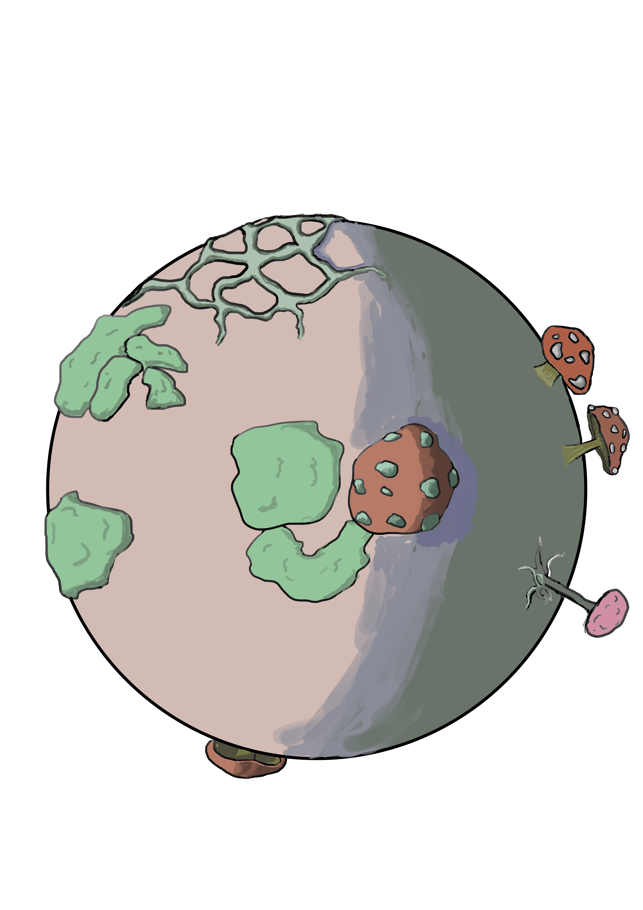

FUNGUS WORLD


A new world may refer to previously
unrecognized worlds, perhaps those that have
always existed or simply require a different
perspective to observe. This is a wondrous
world that is ignored by humans and beyond
their perception. Many things may be
considered unimportant or unrelated by people
and thus ignored. Only their own affairs are
considered important, and they only care about
themselves, ignoring everything else. However,
observing different "worlds" may bring you
different perspectives and unique views, adding
different flavors to your life. In this ignored
world, a new world is being nurtured. If humans
discover this world, they will be shocked. The
natural world is observing human creations,
learning from them, and some have even
acquired wisdom.This world does not have the
same level of development as the human world
today, so they use their own ways to address
these shortcomings.


This world has given birth
to artists who, without the
use of paints and brushes
have found their own ways
to create. However, this
does not mean that they
are any less talented than
human artists. In fact, they
have the ability to create
works that are on par with
those of human artists.
photographers have also emerged, with
their own unique understandings of
angles, composition, and lighting.
Despite the lack of modern human
technology, they are still able to
capture photos in their own way.
However, due to the lack of modern
human communication and technology
in this world, they are unable to share
eir work with others for appreciation
They can only memorize the content of.
their photos and keep it in their heads.
This means that they cannot receive
enough attention and appreciation
during their lifetime, and only after their
death can their work be discovered and
appreciated. This may be why artists
often have to wait until after death to
gain more recognition and admiration.